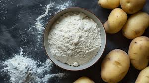
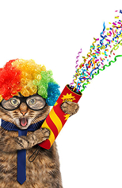

Wrapping That Makes Tails Wag!
What’s It Made Of?
We get it—your pets are curious, playful, and love to explore with their mouths! That’s why our wrapping paper is made from completely non-toxic, food-safe, and digestible materials. So even if your pup or kitty takes a nibble, there’s nothing to worry about!

Eco-Friendly Inside & Out
Every sheet of Wrap & Wag is printed using food-grade inks and made from biodegradable materials that break down naturally. We’re committed to keeping tails wagging and the planet smiling. Less waste, more joy—it’s a win-win for pets and the planet!
Tested by Pets, Approved by Vets
Safety is our top priority. Our wrapping paper has been reviewed and approved by pet experts and vets to ensure it meets the highest standards. We even let our own furry friends do the “taste test” so you can wrap with confidence and love.

Contact Us:
Wrap&Wag@gmail.com
858-880-5647
Wrap&Wag@gmail.com
858-880-5647